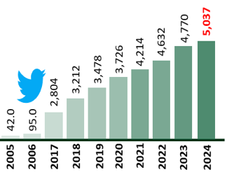
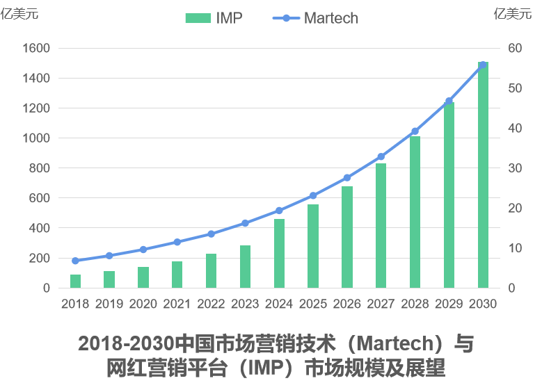
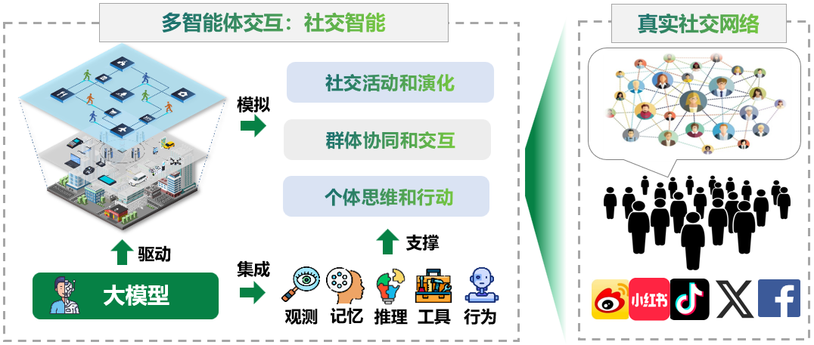
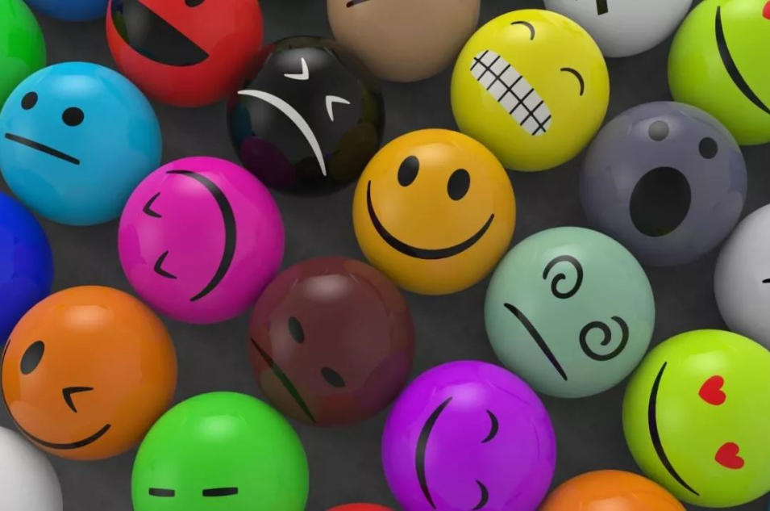
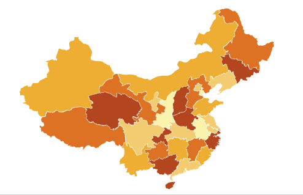
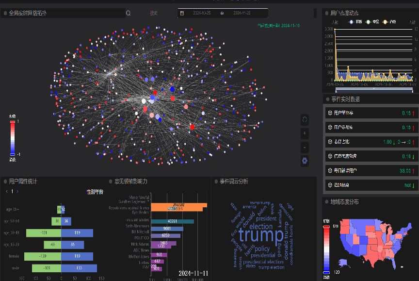

项目概述
洞察、模拟与重现社会态势
全球社交媒体活跃用户已超 50 亿，构成复杂网络社会系统。社交网络揭示社会的潜在规律， 推动人工智能赋能社会科学研究的范式变革，开拓千亿美元级市场空间。

50亿+
全球社媒活跃用户

30%+
市场年均增长率
行业痛点
个体建模难
行为复杂，难以精准复刻
群体推演难
博弈涌现，趋势难预测
传播复现难
路径复杂，茧房效应显著
亟需构建具有 个体高精度、 群体高协同 及支持复杂推演的内容模拟沙盘
产品核心架构

SocialSphere 是以大模型为认知引擎的多智能体社交网络模拟系统
个体层面
大模型驱动个体认知演化
群体层面
多智能体协同群体行为涌现
传播层面
高保真映内容传播过程
应用功能
全局舆情检测
多主体社会态势感知
传播演化分析
信息扩散机制推演
意见领袖影响力
关键影响节点识别
关键传播路径
核心传播链路洞察

态度演化干预
干预策略效果评估

地域态度倾向
空间异质态度刻画

使用路径
STEP 1
仿真场景配置
用户 · 网络 · 策略
STEP 2
群体行为演化
多体协同交互
STEP 3
商业策略演练
多方案对比评估
STEP 4
数字商业决策
低风险上线